Глава 5 Дерево оптимального поиска
1 Определение Б-дерева порядка m
2 Поиск в дереве
3 Построение Б-дерева<
4 Определение двоичного Б-дерева
5 Добавление вершины в дерево
1 Определение Б-дерева порядка m
Деревья, имеющие вершины со многими потомками, будем называть сильноветвящимися. Такие деревья могут быть эффективно использованы для решения следующей задачи: формирование и поддержание крупномасштабных деревьев поиска, для которых необходимы включения и удаление элементов, но для которых либо не хватает оперативной памяти, либо она слишком дорога для долговременного использования.
В этом случае вершины дерева могут храниться во внешней памяти (например, на диске), тогда ссылки представляют собой адреса на диске, а не в оперативной памяти. Если использовать двоичное дерево для n = 106 элементов, то потребуется log(106) = 20 шагов поиска. Так как каждый шаг включает в себя обращение к диску, то необходимо минимизировать число обращений к диску. Сильноветвящиеся деревья - идеальное решение этой проблемы, т.к. при обращении к диску можно считывать не один элемент, а целую группу, причём размер сектора диска определяет размер минимальной порции (обычно кратен 512 байт). Таким образом, за одно обращение считывается поддерево, которое будем называть страницей. Например, пусть для дерева из 106 элементов размер страницы равен 100 вершин. Поиск будет требовать в среднем log100(106) = 3, а не 20 обращений к диску. Однако если дерево растёт случайным образом, то в худшем случае может потребоваться даже 104 обращений. Поэтому Р. Байером и Е. Маккрейтом был сформулирован критерий управления ростом дерева: каждая страница (кроме одной) должна содержать (при заданном постоянном m) от m до 2m элементов.
Таким образом, для дерева с n элементами и максимальном размером в 2m вершин в худшем случае потребуется logmn обращений к страницам (диску). При этом коэффициент использования памяти не меньше, чем 50%, так как страницы всегда заполнены минимум наполовину. Также эта схема позволяет достаточно просто осуществлять поиск, включения и удаления элементов.
Введем следующее определение. Б - дерево порядка m - это дерево со следующими свойствами:
В каждой странице хранится k элементов данных d1 < d2 < ... < dk и k+1 указатель p0, p1, ...pk. Каждый указатель pi либо равен NIL, либо указывает на вершину, все элементы которой больше di, но меньше di+1.
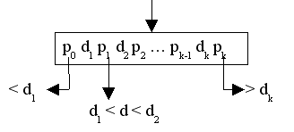
Рисунок 23 - Страница Б-дерева
Для каждой вершины, кроме корня m
 k 2m,
для корня 1 k 2m.
k 2m,
для корня 1 k 2m.
Все листья дерева расположены на одном уровне.
Пример Б-дерева при m = 2.
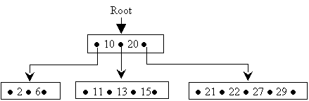
Рисунок 24 - Пример Б-дерева
Очевидно, количество обращений к диску равно высоте Б-дерева. Легко видеть, что минимальное количество вершин в Б-дереве при заданной высоте h определяется равенством nmin = 2(m+1)h-1 - 1. Отсюда высота Б-дерева порядка m с n элементами данных
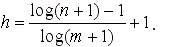
. Например, при m =255 высота h меньше, чем log n/8, т.е. по сравнению с обычными двоичными деревьями требуется в 8 раз меньше обращений к диску.2 Поиск в дереве
Если спроецировать Б - дерево на один уровень, то элементы расположатся в возрастающем порядке слева направо. Такое размещение определяет способ поиска элемента с заданным ключом. Страница считывается в оперативную память, а затем производится поиск среди элементов d1, d2, ...,dk (упорядоченных!). Если k мало, то можно использовать простой последовательный поиск, если k достаточно большое, то - двоичный поиск.Будем считать, что элементы на странице представлены в виде массива. Тогда структура данных может быть следующим образом описана (на Паскале):
type pPage = ^Page; {указатель на страницу}
Item = record {тип элемента}
Data: integer;
p: pPage;
end;
Page = record {тип страницы}
k: 0 . . 2*m;
p0: pPage;
e: array [1 . . 2*m] of Item;
end;
где m - порядок Б - дерева,
k - количество элементов на странице,
p0 - указатель на страницу с элементами < d1,
e - массив элементов на странице.
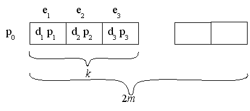
Рисунок 25 - Структура страницы Б-дерева
Алгоритм на псевдокоде
Поиск в Б - дереве (D: Данные, a: pPage)
Обозначим L, R левая и правая границы поиска на странице

3 Построение Б-дерева
Построение Б-дерева или включение нового элемента данных D в Б-дерево происходит следующим образом:
Выполним поиск элемента D в дереве.
Если элемента D нет в дереве, то мы имеем страницу a и позицию R, в которой ожидали найти элемент D.
Вставим элемент в позицию R+1, при этом количество элементов на странице k увеличилось на 1.
Если k < = 2m, то процесс включения закончен.
Если k > 2m (переполнение страницы), то создаём новую страницу b, переносим в неё m правых элементов из страницы a, а средний элемент переносим на один уровень вверх на родительскую страницу.
Включение элемента в родительскую страницу производится по такому же алгоритму.
Если родительской страницы нет, то она создаётся и в неё включается один элемент.
Эта схема сохраняет все характерные свойства Б-дерева. Получившиеся две новые страницы содержат ровно по m элементов. Включение элемента в родительскую страницу может опять перевести к переполнению, то есть разделение страниц может распространиться до самого корня. В этом случае может увеличиться высота дерева. Таким образом, Б-деревья растут обратно: от листа к корню.
Пример построения Б-дерева при m = 2. Предварительно удалим повторяющиеся буквы.
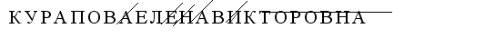
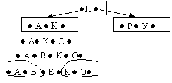
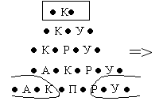
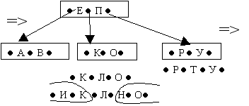
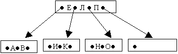
Рисунок 26 - Построение Б-дерева
Алгоритм на псевдокоде
Построение Б - дерева (D: Данные, a: pPage, Rost: Boolean, V: Item)
Обозначим D - добавляемые данные
а - адрес страницы
Rost - логическая переменная; (принимает значение истина, если дерево выросло).
V - рабочая переменная типа Item для элемента, передаваемого вверх по дереву.
u - рабочая переменная типа Item, фактический параметр при вызове процедуры построения

При создании Б-дерева необходимо предусмотреть разделение корневой страницы и создания нового корня из одного элемента. Это будет выполняться, если после обращения к процедуре построения Б-дерева с параметром Rost равным ИСТИНА.
Алгоритм на псевдокоде
Разделение корневой страницы
Root := NIL
DO <ввести D>
Построение Б-дерева (D, Root,Rost, u)
IF(Rost = true)(включение новой корневой страницы)
q:=Root
new(Root)
root k := 1
k := 1
rootp0:= q
roote1:=u
FI
OD
4 Определение двоичного Б-дерева
На первый взгляд кажется, что наименьший интерес представляют Б-деревья первого порядка. Но иногда стоит обращать внимание и на такие исключительные варианты. Очевидно, что Б-дерево первого порядка не имеет смысла использовать для представления больших множеств данных, требующих вторичной памяти, т.к. приблизительно 50% всех страниц будут содержать только один элемент.
Двоичное Б-дерево состоит из вершин (страниц) с одним или двумя элементами. Следовательно, каждая страница содержит две или три ссылки на поддеревья. На рисунке 53 показаны примеры страниц Б - дерева при m = 1.
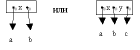
Рисунок 27 - Виды вершин ДБД
Поэтому вновь рассмотрим задачу построения деревьев поиска в оперативной памяти компьютера. В этом случае неэффективным с точки зрения экономии памяти будет представление элементов внутри страницы в виде массива. Выход из положения - динамическое размещение на основе списочной структуры, когда внутри страницы существует список из одного или двух элементов.
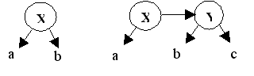
Рисунок 28 - Вершины двоичного Б-дерева
Таким образом, страницы Б-дерева теряют свою целостность и элементы списков начинают играть роль вершин в двоичном дереве. Однако остается необходимость делать различия между ссылками на потомков (вертикальными) и ссылками на одном уровне (горизонтальными), а также следить, чтобы все листья были на одном уровне.
Очевидно, двоичные Б-деревья представляют собой альтернативу АВЛ-деревьям. При этом поиск в двоичном Б-дереве происходит как в обычном двоичном дереве.
Высота двоичного Б-дерева
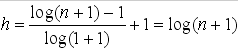
. Если рассматривать двоичное Б-дерево как обычное двоичное дерево, то его высота может увеличиться вдвое, т.е.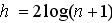
. Для сравнения, в АВЛ-дереве даже в самом плохом случае h1.44
logn.
Поэтому сложность поиска в двоичном Б-дереве и в АВЛ-дереве одинакова
по порядку величины.
5 Добавление вершины в дерево
Построение двоичного Б-дерева происходит путем добавления новой вершины в уже существующее дерево. Введем логическую переменную VR, показывающую вертикальный рост дерева (в случае, если страница переполнилась и средний элемент передается на вышележащий уровень) и логическую переменную HR, определяющую горизонтальный рост дерева (если новый элемент размещается на этой же условной странице). Также определим показатель баланса BAL для каждой вершины, который принимает значение 0, если у данной вершины есть только вертикальные ссылки (вершина одна на странице), и значение 1, если у данной вершины есть правая горизонтальная ссылка.
При добавлении элементов в двоичное Б-дерево различают 4 ситуации, возникающих при росте левых или правых поддеревьев (см. рис. 55). Самый простой случай (1) - рост правого поддерева вершины А, когда А - единственный элемент на странице. Тогда вертикальная ссылка просто превращается в горизонтальную (HR=1, баланс вершины А равен 1). Если на странице уже два элемента (2), то при добавлении новой вершины С средняя вершина В передается на вышестоящий уровень (VR=1, баланс вершины В равен 0).
В случае роста левого поддерева, если вершина В одна на странице (3), то вершина А добавляется на эту страницу. Однако левая ссылка не может быть горизонтальной, поэтому требуется переопределение ссылок (HR=1, баланс вершины А равен 1). Если на странице два элемента, то, как и в случае 2, средняя вершина В поднимается на вышестоящий уровень (VR=1, баланс вершины В равен 0).
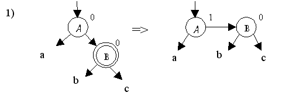
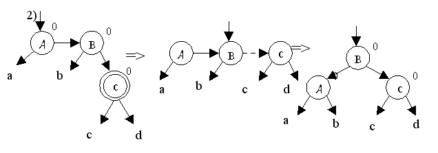
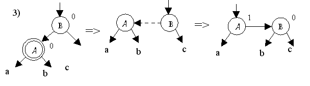
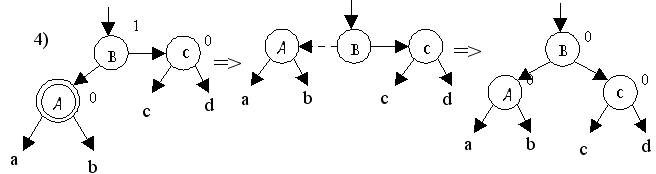
Рисунок 29 - Четыре ситуации, возникающих при росте левых или правых поддеревьев
Алгоритм на псевдокоде
Добавление в ДБ-дерево(D: Данные, p: pVertex)
Обозначим
VR,HR - логические переменные, определяющие вертикальный или горизонтальный рост дерева (в начале VR, HR равны ИСТИНА)

Пример построения двоичного Б-дерева приведен на следующем рисунке.
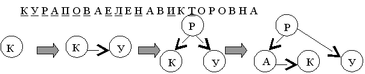
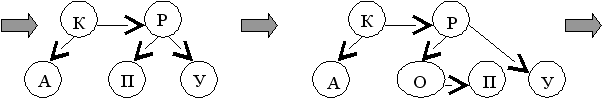
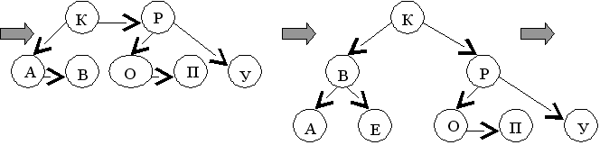
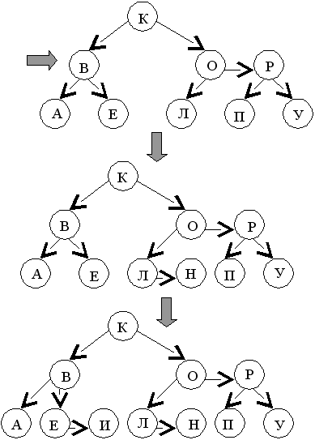
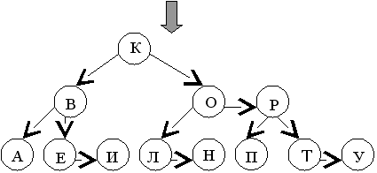
Рисунок 30 - Построение двоичного Б-дерева
При построении двоичного Б-дерева реже приходится переставлять вершины, поэтому АВЛ-деревья предпочтительней в тех случаях, когда поиск ключей происходит значительно чаще, чем добавление новых элементов. Кроме того, существует зависимость от особенностей реализации, поэтому вопрос о применение того или иного тапа деревьев следует решать индивидуально для каждого конкретного случая.
Контрольные вопросы
- Дайте определение Б-дерева порядка m.
- Назовите трудоемкость поиска вершины в Б-дереве порядка m.
- Какова высота Б-дерева порядка m.
- Каким образом добавляется новый элемент в Б-дерева порядка m.
- Что такое двоичное Б-дерево?
- Какова высота двоичного Б-дерева?
- Какова трудоемкость добавления вершины в двоичное Б-дерево?